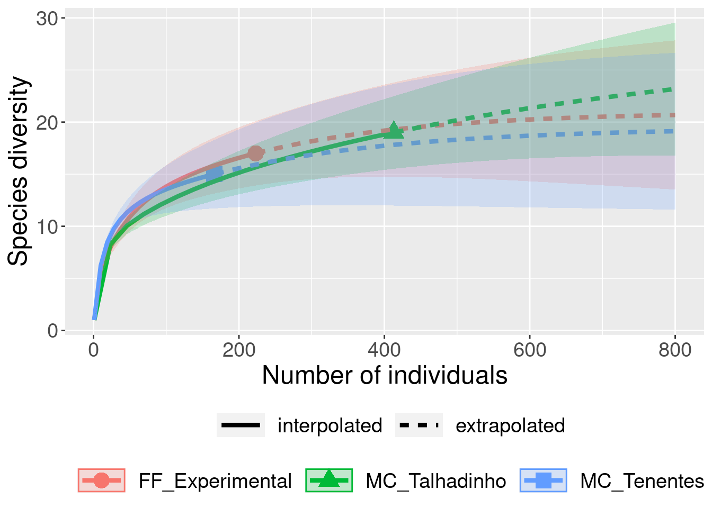
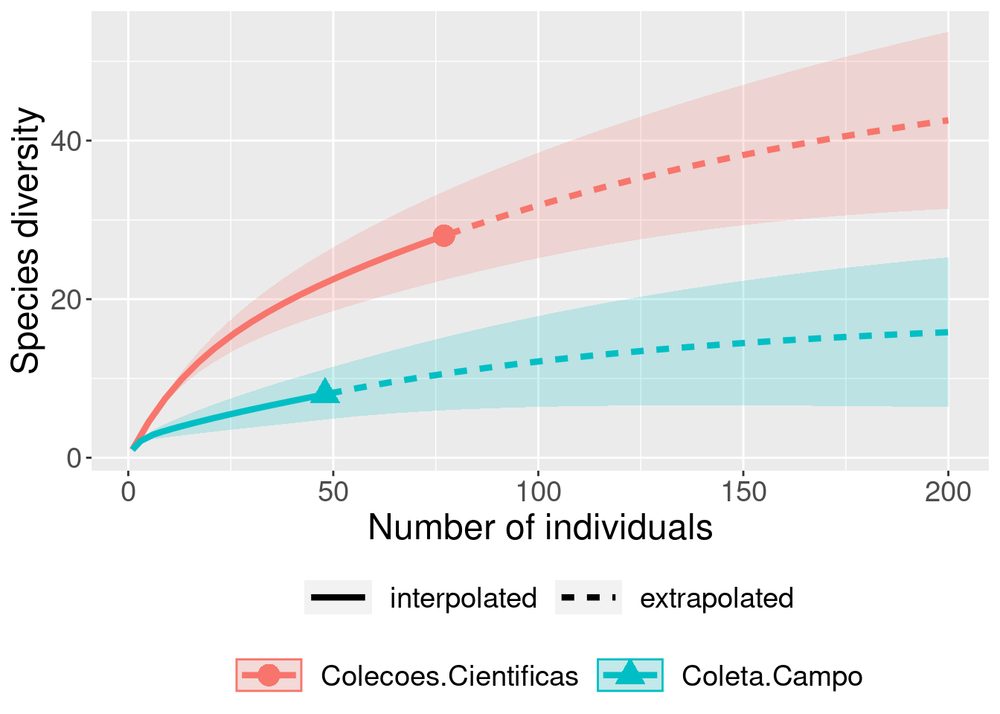

Capítulo 5 Rarefação
5.1 Background da análise
Uma das dificuldades na comparação da riqueza de espécies entre comunidades é decorrente da diferença no esforço amostral (e.g.diferença no número de indivíduos, discrepância na quantidade de unidades amostrais ou área amostrada) que inevitavelmente influenciará no número de espécies observadas (Gotelli & Chao 2013). O método de rarefação nos permite comparar o número de espécies entre comunidades quando o tamanho da amostra ou a abundância de indivíduos não são iguais. A rarefação calcula o número esperado de espécies em cada comunidade tendo como base comparativa um valor em que todas as amostras atinjam um tamanho padrão, ou comparações baseadas na comunidade com menor número de amostragens ou com menos indivíduos. O teste foi formulado considerando seguinte pergunta: Se considerarmos n indivíduos ou amostras (n < N) para cada comunidade, quantas espécies registraríamos nas comunidades considerando o mesmo número de indivíduos ou amostras?
\[E(S) = \sum 1 - \frac{{(N - N_1)}/{n}}{{N}/{n}}\]
Onde:
E(S) = Número de espécies esperado,
N = Número total de indivíduos na amostra,
Ni = Número de indivíduos da iésima espécie,
n = tamanho da amostra padronizada (menor amostra).
Gotelli & Collwel (2001) descrevem este método e discutem em detalhes as restrições sobre seu uso na ecologia:
- As amostras a serem comparados devem ser consistentes do ponto de vista taxonômico, ou seja, todos os indivíduos devem pertencer ao mesmo grupo taxonômico;
- As comparações devem ser realizadas somente entre amostras com as mesmas técnicas de coleta;
- Os tipos de hábitat onde as amostras são obtidas devem ser semelhantes;
- É um método para estimar a riqueza de espécies em uma amostra menor – não pode ser usado para extrapolar e estimar riqueza.
Contudo, é importante ressaltar que esta última restrição foi superada por Colwell et al. (2012) e Chao & Jost (2012) que desenvolveram uma nova abordagem onde os dados podem ser interpolados (rarefeito) para amostras menores e extrapolados para amostras maiores.
5.2 Exemplo prático 1 - Morcegos
5.2.1 Explicação
Explicação dos dados
Neste exemplo usaremos os dados de espécies de morcegos amostradas em três fragmentos florestais (Breviglieri 2008): i) Mata Ciliar do Córrego Talhadinho com 12 hectares inserida em uma matriz de pastagem; ii) Mata Ciliar do Córrego dos Tenentes com 10 hectares inserida em uma matriz de cultivo de cana-de-açucar e pastagem; e iii) Fazenda Experimental de Pindorama com 128 hectares inserida uma matriz de cana-de-açúcar e pastagem.
Pergunta:
A riqueza de espécies de morcegos é maior na Fazenda Experimental do que nos fragmentos florestais menores?
Predições
O número de espécies será maior em fragmentos florestais maiores.
Variáveis
- Variáveis preditoras
- matriz ou dataframe com as abundâncias das espécies de morcegos registradas nos três fragmentos florestais
Checklist
- Verificar se a sua matriz ou dataframe estão com as espécies nas linhas e os fragmentos florestais nas colunas
5.2.2 Análise
Calculo da rarefação
##
checking for file ‘/tmp/RtmpDWvncR/remotes1a6176aeac7b/paternogbc-ecodados-4463a1d/DESCRIPTION’ ...
✓ checking for file ‘/tmp/RtmpDWvncR/remotes1a6176aeac7b/paternogbc-ecodados-4463a1d/DESCRIPTION’
##
─ preparing ‘ecodados’:
## checking DESCRIPTION meta-information ...
✓ checking DESCRIPTION meta-information
##
─ checking for LF line-endings in source and make files and shell scripts
##
─ checking for empty or unneeded directories
##
─ building ‘ecodados_0.1.0.tar.gz’
##
## library(ecodados)
dados_rarefacao <- rarefacao_morcegos
resultados_morcegos <- iNEXT(dados_rarefacao, q = 0, datatype = "abundance", endpoint = 800)
# q refere-se a família *Hill-numbers* (Hill 1973) onde 0 = riqueza de espécies, 1 = diversidade de Shannon, e 2 = diversidade de Simpson.
# Veja mais detalhes sobre os números de Hill no Capítulo 7 onde tratamos de extrapolações.
# datatype refere-se ao tipo de dados que você vai analisar (e.g. abudância, incidência).
# endpoint refere-se ao valor de referência que você determina para a extrapolação.
# Visualizar os resultados
ggiNEXT(resultados_morcegos, type = 1)
5.2.3 Interpretação dos resultados
Neste exemplo, foram registrados 166 indivíduos na MC_Tenentes, 413 na MC_Talhadinho e 223 na FF_Experimental. Lembrando, você não pode comparar a riqueza de espécies observada diretamente: 15 espécies na MC_Tenentes, 17 espécies na MC_Talhadinho, e 13 espécies no FF_Experimental. A comparação da riqueza de espécies entre as comunidades deve ser feita com base na riqueza de espécies estimada que é calculada com base no número de indivíduos da comunidade com menor abundância (166 indivíduos). Olhando o gráfico é possível perceber que a riqueza de espécies de morcegos estimada não é diferente entre os três fragmentos florestais quando corrigimos o problema da abundância pela rarefação. A interpretação é feita com base no intervalo de confiança de 95%. As curvas serão diferentes quando os intervalos de confiança não se sobreporem (Chao et al. 2014). Percebam que está abordagem, além da interpolação (rarefação), também realiza extrapolações que podem ser usadas para estimar o número de espécies caso o esforço de coleta fosse maior. Este é o assunto do nosso próximo capítulo.
5.3 Exemplo prático 2 - Rarefação
5.3.1 Explicação
Explicação dos dados
Neste exemplo iremos comparar o número de espécies de anuros e répteis (serptentes e lagartos) usando informações dos indivíduos depositados em coleções científicas e coletas de campo (da Silva et al. 2017).
Pergunta:
A riqueza de espécies de anuros e répteis é maior em coleções científicas do que nas coletas de campo?
Predições
O número de espécies será maior em coleções científicas devido ao maior esforço amostral (i.e. maior variação temporal para depositar os indíviduos e maior número de pessoas contribuindo com as informações de diferentes estudos e/ou coletas esporádicas).
Variáveis
- Variáveis preditoras
- matriz ou dataframe com as abundâncias das espécies de anuros e répteis (planilhas separadas) registradas em coleções científicas e coletas de campo.
Checklist
- Verificar se a sua matriz ou dataframe estão com as espécies nas linhas e a fonte dos dados nas colunas.
5.3.2 Análise
Calculo da rarefação para os dados de répteis
library(iNEXT)
rarefacao_repteis <- rarefacao_repteis
resultados_repteis <- iNEXT(rarefacao_repteis, q = 0, datatype = "abundance", endpoint = 200)
# Visualizar os resultados
ggiNEXT(resultados_repteis, type = 1)
5.3.3 Interpretação dos resultados
Neste exemplo,foram registradas oito espécies de répteis nas coletas de campo (40 indivíduos) e 28 espécies nas coleções científicas (77 indivíduos). Com base na rarefação, concluímos que a riqueza de espécies de répteis obtida nas coleções científicas é 2,5 vezes maior do que a obtida em coletas de campo.
Calculo da rarefação para os dados dos anuros
library(iNEXT)
rarefacao_anuros <- rarefacao_anuros
resultados_anuros <- iNEXT(rarefacao_anuros, q = 0, datatype = "abundance", endpoint = 800)
# Visualizar os resultados
ggiNEXT(resultados_anuros, type = 1, grey = TRUE)Interpretação dos resultados
Neste exemplo,foram registradas 21 espécies de anuros nas coletas de campo (709 indivíduos) e 12 espécies nas coleções científicas (37 indivíduos). Com base na rarefação, concluímos que não há diferença entre a riqueza de espécies de anuros obtida em coletas de campo e coleções científicas.
5.4 Para se aprofundar
Recomendamos aos interessados que olhem a página do EstimateS software e baixem o manual do usuário que contém informações detalhadas sobre os índices de rarefação.Este site foi criado e é mantido pelo Dr. Robert K. Colwell, um dos maiores especialistas do mundo em estimativas da biodiversidade
Recomendamos também o livro Magurran & McGill (2010) - Biological Diversity Frontiers in Measurement and Assessment.